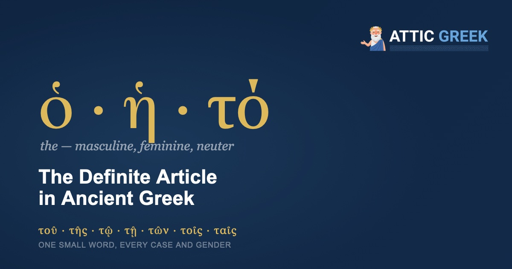

English gets by with a single word for “the.” Ancient Greek has a whole family of them, and every one is doing real work.
That sounds like bad news for a beginner, and for about a week it feels like it. But the definite article is also the best thing you can learn early, because it is a small, closed set of forms that shows up in nearly every sentence you will ever read. Learn it once and you can see the shape of an Ancient Greek sentence before you know a single noun in it.
What is the definite article in Ancient Greek?
It is the Ancient Greek “the”: ὁ for masculine nouns, ἡ for feminine, τό for neuter. Where English never changes “the,” Ancient Greek changes it to match the noun beside it in three ways at once: gender, number (one thing or several), and case (the noun’s job in the sentence).
Gender here is grammatical, not biological. ὁ λόγος (“the word”) is masculine, ἡ ψυχή (“the soul”) is feminine, τὸ ἔργον (“the work, the deed”) is neuter. You learn each noun together with its article, and the article tells you the gender the moment you see it.
How does the article change form?
Here is the full Attic article in the singular:
| Singular | Masculine | Feminine | Neuter |
|---|---|---|---|
| Nominative | ὁ | ἡ | τό |
| Genitive | τοῦ | τῆς | τοῦ |
| Dative | τῷ | τῇ | τῷ |
| Accusative | τόν | τήν | τό |
And in the plural:
| Plural | Masculine | Feminine | Neuter |
|---|---|---|---|
| Nominative | οἱ | αἱ | τά |
| Genitive | τῶν | τῶν | τῶν |
| Dative | τοῖς | ταῖς | τοῖς |
| Accusative | τούς | τάς | τά |
Look closely and you will see that many of the forms repeat. The genitive plural is τῶν in all three genders. Masculine and neuter share their genitive and dative forms. Once you notice the repeats, the pattern gets much easier to hold in your head.
There is one more trick worth learning on day one. The masculine and feminine nominatives, ὁ, ἡ, οἱ, αἱ, start with a rough breathing mark. Every other form starts with τ. That single rule sorts most of the table.
Two small notes. The article has no vocative, so when Socrates addresses the jury in the Apology he says ὦ ἄνδρες Ἀθηναῖοι, “men of Athens,” with no article at all. And Ancient Greek also has a dual number for exactly two things, with its own article forms (τώ and τοῖν among them), but you will rarely meet them, so leave them for later.
Why do the forms look different in real texts?
This catches almost every beginner. In the tables, forms like τόν and τήν carry an acute accent. In an actual sentence they often carry a grave instead: τὸν λόγον, “the word” (as an object). That is not a different word. Ancient Greek changes an acute accent on a word’s final syllable to a grave whenever another word follows it. These article forms are one syllable long, so the acute is always on the final syllable, and you will see the grave constantly. The forms with a circumflex, like τοῦ and τῶν, do not change.
Also, ὁ, ἡ, οἱ, αἱ carry no accent at all. They are proclitics, which means they lean on the word that follows them and borrow its stress. If you see an unaccented ὁ in a text, that is not a printer’s mistake. It is the article doing what it always does.
Is there an indefinite article, a word for “a” or “an”?
No, and this surprises people. Ancient Greek has the, but it has no a. A bare ἄνθρωπος can mean “a man,” “man,” or “a person,” depending on context, and you decide which English word fits. When a speaker wants to point at some unspecified individual, Ancient Greek uses the little word τις: ἄνθρωπός τις is “a certain man” or “someone.”
Why does the position of the article change the meaning?
Here is where the article stops being a memorization task and starts being genuinely clever. Where you put the article in relation to an adjective changes what the whole phrase means.
When the adjective sits directly next to the article, it is in attributive position, and it simply describes the noun: ὁ ἀγαθὸς ἀνήρ or ὁ ἀνὴρ ὁ ἀγαθός, both meaning “the good man.” When the adjective sits outside the article, it is in predicate position, and it says something about the noun, which turns the phrase into a whole sentence: ἀγαθὸς ὁ ἀνήρ or ὁ ἀνὴρ ἀγαθός, meaning “the man is good.”
Notice there is no verb in that second version. Ancient Greek does not need one, which is the same quiet skill we saw in the verb “to be”: the “is” lives in the arrangement of the words.
You can see the attributive pattern in one of the most quoted lines of Plato:
ὁ δὲ ἀνεξέταστος βίος οὐ βιωτὸς ἀνθρώπῳ.
The unexamined life is not worth living for a human being.
Plato, Apology 38a
Read the first three words: article, adjective, noun. ὁ ἀνεξέταστος βίος is “the unexamined life,” a single unit, with the adjective locked inside the article’s reach. The sentence is quietly telling you that “unexamined” is part of what this life is, not a comment added afterward.
What else can the article do?
Quite a lot, and much of it looks different from English. A few of the most common jobs:
It can turn other words into nouns. οἱ σοφοί is “the wise (people),” τὰ ἀγαθά is “good things,” τὸ καλόν is “the beautiful” or “beauty.” It can even do this to a verb: τὸ εἶναι, “the being,” the infinitive of the verb “to be” turned into a noun, which philosophers leaned on heavily.
It can mark a whole class. Aristotle’s famous claim reads:
ὁ ἄνθρωπος φύσει πολιτικὸν ζῷον.
Man is by nature a political animal.
Aristotle, Politics 1253a
English says “man” with no article, but Ancient Greek says ὁ ἄνθρωπος, “the human being,” meaning human beings as a kind. The article is pointing at the category, not at any one person. (And once again there is no verb: the “is” is simply understood.)
It appears with abstract ideas. Where English says “virtue” or “wisdom,” Ancient Greek will often say ἡ ἀρετή or ἡ σοφία, literally “the virtue,” “the wisdom.” You do not translate the “the.”
It sets up contrasts. ὁ μὲν … ὁ δέ means “the one … the other,” and with plurals, οἱ μὲν … οἱ δέ means “some … others.” You will see this pattern all the time.
It often stands before a person’s name. Plato and Xenophon regularly write ὁ Σωκράτης, “Socrates,” and again you simply leave the “the” untranslated.
Where does the little word come from?
Here is a nice thing to know. The Ancient Greek article began life as a demonstrative, a pointing word meaning “this” or “that.” In Homer it still mostly works that way, which is why the article can look so odd there. Over the centuries it softened into the plain “the” of classical Attic. The neuter τό is even a relative of English “that,” both descending from the same ancient Indo-European pointing word. When you say “that” in English, you are saying a cousin of τό.
Learn the article by using it
Attic Greek teaches Ancient Greek from the alphabet up. The definite article is one of the five lessons that are free forever, alongside the alphabet, breathings and accents, and both noun declensions. Around them sit 210 structured lessons, quizzes, flashcards, and annotated readings from Homer, Plato, and the great classical authors, with Socrates himself as your guide.
Start with 5 free lessons →Five lessons and the opening of the Odyssey, free forever. Then $4.99/month or $34.99/year.